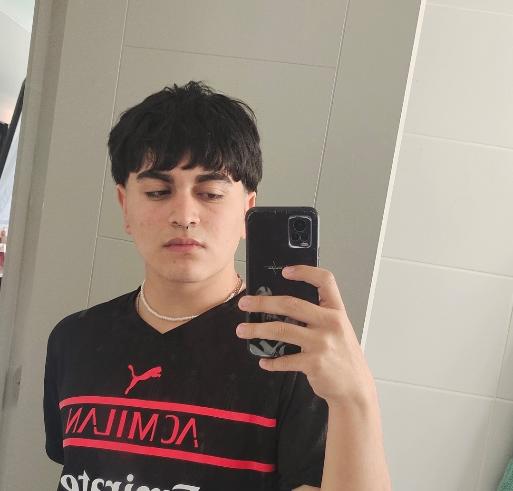

Curriculum Vitae.

Vicente Gabriel Stuardo Vidal.
Perfil Profesional.
Recientemente licenciado de 4to Medio, sin experiencia laboral de momento, pero con toda seriedad dispuesto a aprender, desarrollarme en el ambito laboral. Totalmente capáz de resolver problemas de forma eficaz. Aprendo de muy buena manera y rapidamente de forma autoctona y guiada
Información Personal.
- Nombre: Vicente Gabriel Stuardo Vidal.
- Fecha de nacimiento: 4 de Agosto de 2004.
- Edad: 18
- Estado Civil: Soltero.
- Dirección: Pasaje Luis Aguilera Baéz 1777, Coquimbo.
- Telefono: +56934333174
- Correo electrónico: vicentestuardo04@gmail.com
Educación.
- Colegio BAU: 2009 ( Pre Kinder )
- Colegio Doctora Victoría Garcia: 2010-2011 ( Kinder- 1ro Basico )
- Colegio Boston-Lincoln College: 2012-2021 ( 2do Basico - 3ro Medio )
- Colegio San Lorenzo: 2022 (4to Medio)
Enlaces de contacto:
Facebook
Instagram
Portafolio